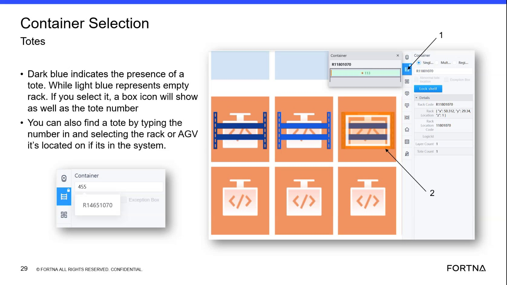

| Procedure ID | proc_interpret_tote_presence_colors_and_distinguish_stations_on_the_container_selection_screen_v1 |
|---|---|
| Title | Interpret Tote Presence Colors And Distinguish Stations On The Container Selection Screen |
| Procedure Type | reference |
| Primary Role | operator |
| Support Safe | Yes |
| Validation Status | needs_sme_review |
| Merge Status | source_finalized |
Use the Container Selection screen color and label conventions from the training source to determine whether a visible location shows a tote present, an empty rack, or a station. The source states that dark blue indicates a tote is present, light blue indicates an empty rack, and items without those blue indicators are stations with associated IDs.
Use this reference when viewing the Container Selection screen and you need to interpret whether a displayed location contains a tote, is empty, or is a station based on the documented color and label appearance.
Responsible role: operator
Instruction:
Open or view the Container Selection screen and look at the rack or container indicators shown on the display.
Expected result:
The relevant rack, container, or labeled screen items are visible for interpretation.
Screens / Images:

Stop or Escalate If:
Responsible role: operator
Instruction:
Observe whether the selected or visible location is marked dark blue or light blue.
Expected result:
The location is identified as either dark blue, light blue, or not one of those blue indicators.
Screens / Images:
Stop or Escalate If:
Responsible role: operator
Instruction:
Interpret dark blue as indicating the presence of a tote and light blue as representing an empty rack.
Expected result:
The viewed location is correctly classified as tote present or empty rack when one of the documented blue colors is shown.
Screens / Images:
Stop or Escalate If:
Responsible role: operator
Instruction:
If an item does not have the blue or dark blue tote indicators, compare it to the training note that such items are stations rather than standard tote locations.
Expected result:
Items without the documented blue occupancy indicators are recognized as stations.
Screens / Images:
Stop or Escalate If:
Responsible role: operator
Instruction:
When a station is identified, note that the training says stations have associated IDs.
Expected result:
The user recognizes that station items are associated with IDs.
Screens / Images:
Stop or Escalate If: